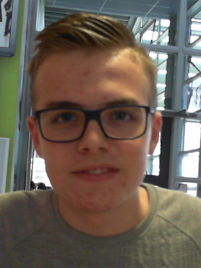

Ik voetbal bij vvHardinxveld in Hardinxveld-Giessendam natuurlijk, Mijn interesses in gamen liggen bij de shooters, strategy games en MMORPG's.
Ik zit momenteel op het Da vinci in Gorinchem en daar geniet ik van de opleiding Applicatie-Ontwikkelaar.
Ik heb twee weken stage gelopen bij de Albert Heijn in 2015 en ik werk op dit moment bij de Dirk van den Broek in Hardinxveld-Giessendam.